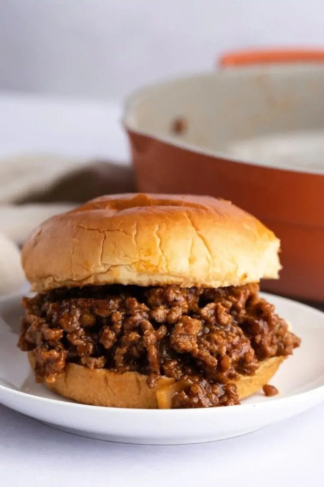

Sloppy Joe Recipe

What is a sloppy joe?
A Sloppy Joe is a sandwich consisting of
ground beef and onions in a tomato-based
sauce served on a hamburger bun.
The sandwich likely originated in Sioux City,
Iowa in the 1930s. According to legend, the
"loose meat sandwich" was the creation of a
cook named Joe.
Ingredients
- 1 pound of lean ground beef
- 1/4 cup of chopped onion
- 1/4 cup chopped green bell pepper
- 3/4 cup ketchup, or to taste
- 1 tablespoo of brown sugar, or to taste
- 1 teaspoon yellow mustard, or to taste
- 1/2 teaspoon garlic powder
- salt and ground black pepper to taste
- 6 hamburger buns, split
Directions
- Heat a large skillet over medium heat.
Cook and stir lean ground beef in the hot
skillet until some of the fat starts to
render, 3 to 4 minutes.
- Add onion and bell pepper; continue
to cook until vegetables have softened and
beef is cooked through, 3 to 5 more minutes.
- Stir in ketchup, brown sugar, mustard, and
garlic powder; season with salt and pepper.
- Reduce heat to low and simmer for 20 to 30
minutes.
- Divide meat mixture evenly among hamburger buns.